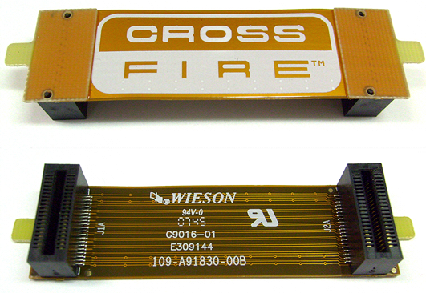
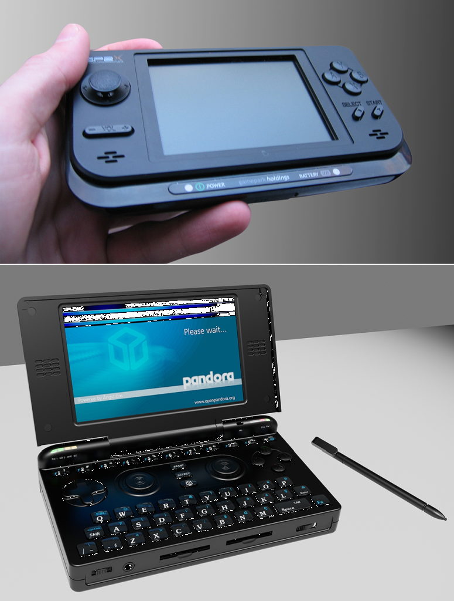
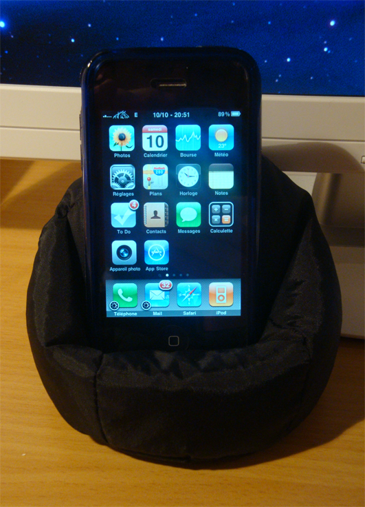
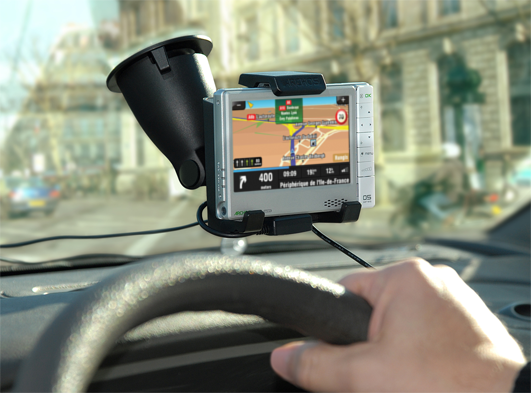

Equips especialitzats
Els ordinadors domèstics segons el tipus de carcassa en què estan muntats es poden classificar en ordinadors de sobretaula i portàtils. Però es pot fer una altra classificació segons les funcionalitats que s’assignen a aquests equips. Un mateix tipus de carcassa pot albergar components més enfocats a usos molt diferents, encara que els ordinadors d’altes prestacions usualment necessiten carcasses que hi permetin muntar sistemes de refrigeració d’última generació.
Cal tenir en compte...
… que els components posats com a exemple i els equips explicats es basen en els que es troben al mercat. Si bé els criteris de tria continuaran sent vàlids més endavant, els components, en canvi, evolucionen d’una manera molt ràpida.
A més d’aquest tipus d’ordinadors també veureu aquells en què no és possible de fer-hi modificacions, perquè es troben muntats en circuits integrats molt compactes. Aquest és el cas de la informàtica mòbil.
Les consoles de jocs (tant de sobretaula com portàtils) en són un cas especial ja que, si bé a priori es tracta de sistemes no modificables, els aficionats a modificar els sistemes hi fan canvis no autoritzats pels fabricants. Aquests canvis van des de les modificacions de maquinari fins a la instal·lació de sistemes operatius no natius (com, per exemple, GNU/Linux) en dispositius d’aquest tipus.
Equips domèstics segons la funcionalitat / les prestacions
Les funcionalitats més comunes dels ordinadors de sobretaula, i cada cop més dels portàtils (a causa de l’augment de les prestacions que ofereixen) són les següents:
- ordinador bàsic per a oficina;
- ordinador HTPC (home theater PC o ordinador multimèdia);
- ordinador d’alt rendiment;
- ordinador per a jocs de darrera generació;
- ordinador de baix pressupost;
- equip servidor, domèstic o empresarial.
A més d’aquest tipus d’ordinadors també hi ha els que no estan pensats per fer-hi modificacions, sinó que són solucions completes de maquinari i programari, i normalment amb una funcionalitat molt definida:
* consoles de jocs de sobretaula i portàtils, * telèfons mòbils intel·ligents * organitzadors personals o PDA.
En alguns casos es troben muntats en circuits integrats molt compactes, com és el cas de la informàtica mòbil.
Equip bàsic per a oficina
El treball diari d’oficina ha passat en pocs anys d’estar centrat en les màquines d’escriure tradicionals als ordinadors. Tot treballador que fa la seva jornada al davant d’un escriptori, ha de ser capaç d’utilitzar un ordinador per fer les tasques diàries, i l’equip ha de ser capaç d’arribar a tot allò que li demani l’usuari.
Un ordinador d'oficina...
… ha de ser capaç de fer totes les tasques diàries que comporta el treball d’oficina, tret que s’estigui especialitzat en gràfics, programació o algun altre camp que requereixi molta potència de computació.
Entre els paràmetres que defineixen aquest perfil d’ordinador, cal tenir-ne en compte els següents:
- No ser gaire barat, però tampoc no gaire car: ens interessa que sigui un ordinador eficient, però no necessitem que sigui de gamma alta. El més intel·ligent és comprar parts de marca, que combinin una alta qualitat (fiabilitat) amb un rendiment mitjà (eficiència). També podem optar per comprar directament equips de marca, com els proporcionats per HP, Compaq o altres empreses contrastades.
- No ser gaire lent, però tampoc superveloç: un ordinador de negocis ha de ser competent, però no cal que sigui el primer a arribar. Per a un empleat, és important no haver d’esperar mentre duu a terme les tasques ofimàtiques, però per a això n’hi ha prou amb un processador de rang mitjà i un parell de gigabytes de RAM.
- No ser gaire sorollós, però tampoc el més silenciós: les oficines són generalment llocs tranquils i, per tant, no interessa un equip que destorbi la pau amb el seu funcionament, però no és necessari tampoc que sigui un dels paràmetres fonamentals, perquè això en podria encarir massa el preu.
- No ser lleig, però tampoc ser última moda: la major part de les oficines són llocs on poden treballar moltes persones diferents i, per tant, no hi ha lloc per a llums de neó o dissenys de caixa agressius (figura).
- Ser bo en moltes tasques, però no el millor en cap: un ordinador de negocis ha de permetre el processament de textos, navegar per Internet, fer presentacions, utilitzar agendes, enviar correus electrònics i, potser, alguna tasca bàsica de base de dades. En cada cas, utilitzareu només algunes de les característiques de cada programa. Això significa que no ens cal cap maquinari especialitzat i que en tindreu prou amb tot allò que vingui integrat a la placa base. Fins i tot les plaques actuals disposen de targeta de xarxa gigabyte, així que no necessitareu afegir-hi expansions.
Equip multimèdia (home theater)
Cada cop és més comú integrar l’ordinador amb la sala de la televisió. Fins fa poc, els reproductors de vídeo (beta, VHS, DVD, Blue-ray) eren aparells especialitzats a fer aquesta tasca i es trobaven al costat de la TV. L’ordinador, si bé va anar agafant cada cop més funcionalitats multimèdia, habitualment era en una altra habitació o espai de la casa, hereva del despatx de treball domèstic. Aquest nou tipus d’ordinador que ha integrat els dos llocs es coneix com a HTPC (home theater PC o PC de cinema a casa).
Un ordinador de negocis...
… requereix la utilització d’un programari determinat, que en la majoria dels casos només es troba disponible per a sistemes Windows. Per tant, aquest equip haurà de portar instal·lat un sistema d’aquesta família, que pot anar des del Windows XP Professional fins a les versions Bussiness o Enterprise de Windows Vista i Windows 7.
L'ordinador HTPC...
… permet veure pel·lícules, escoltar música i navegar per Internet. A més, es connecta al televisor i ens habilita per enregistrar programes i reproduir tot tipus de contingut amb una bona qualitat d’imatge i so. Les sigles PVR (personal video recorder ) habitualment s’empren per designar la funcionalitat d’un HTPC.
La definició del perfil de l’equip HTPC és determinada per les tasques que ha de ser capaç de fer. Ha de ser el centre de tot el lleure basat en la reproducció de continguts multimèdia i, per tant, ha de ser capaç de tractar amb tota classe de continguts relacionats (fotografies, pel·lícules en disc, fitxers de vídeo digitals, música en disc, fitxers d’àudio digitals, senyals de TV –analògiques o digitals–, i programes enregistrats de TV, entre d’altres).
Per tant, es tracta d’un tipus d’equip especialitzat a tractar amb mitjans multimèdia i ha de complir algunes condicions. Ha de ser:
- Complet en connexions: l’ordinador destinat a fer de cinema a casa s’ha de poder connectar amb un monitor d’ordinador, una televisió analògica o digital, un sintonitzador de TDT, una antena de televisió, amb un sistema d’àudio analògic o digital, o amb una consola de jocs. Són molts dispositius, però l’equip serà capaç d’entendre’s amb tots.
- Realment silenciós: no ens interessa sentir cap soroll que ens distregui de l’experiència d’oci. No podem sentir un disc dur o un ventilador mentre els protagonistes s’estan declarant o en qualsevol moment que requereixi tota la nostra atenció.
- Un dispositiu més: el reproductor multimèdia no ha de tenir cap protagonisme. De fet, molts cops el podem tenir dins d’un moble o d’una consola. En cas que es trobi a la vista, no ha de desentonar amb els mobles de la sala d’estar, sinó que haurà de quedar bé al costat d’una televisió LCD i, per això, ha de tenir un aspecte similar al d’un equip d’alta fidelitat tradicional.
- A prova de canvis: el fet que es tracti d’un equip amb components especialitzats fa que no sigui barat. Per tant, interessa que duri el màxim possible i per això es procurarà donar suport als formats i als connectors més actuals.
D’altra banda, hi ha opcions de sistema operatiu per als més utilitzats –Microsoft Windows, Mac OS X i GNU/Linux– amb funcionalitats d’HTPC:
- Microsoft Windows: en sistemes amb Microsoft Windows, l’enfocament habitual és instal·lar una versió que contingui el Windows Media Center (Home Premium o Ultimate Vista, o anteriorment Windows XP Media Center Edition). També es poden utilitzar solucions de programari de tercers com GB-PVR o SageTV.
- GNU/Linux: hi ha diverses distribucions que permeten instal·lar un sistema amb funcionalitat multimèdia per als moments de lleure. Per exemple, Mythbuntu és una distribució basada en Ubuntu Desktop, que utilitza MythTV, així com XBMC Live és un derivat d’Ubuntu Mobile Edition que utilitza XBMC Media Center.
- Mac OS X: pel que fa al sistema d’Apple, el mateix sistema operatiu té alguna funcionalitat HTPC integrada, sobretot amb el programa Front Row, que s’utilitza juntament amb el comandament a distància Apple Remote. Apple disposa d’un equip destinat específicament a funcionar com a HTPC, anomenat Apple TV.
SageTV té versió del programari compatible amb Linux.
Freevo és una alternativa a MythTV que té fins i tot una versió que funciona en el sistema de jocs PlayStation3.
Equip d'alt rendiment
Hi ha un tipus d’equip que ha de ser capaç de fer les tasques a la velocitat més elevada possible. De fet, no és un sol tipus, sinó que un equip d’alt rendiment pot ser un projecte genèric que representi la gamma més alta en qualsevol de les seves utilitats possibles (taula). En tots els casos, els components bàsics han de ser els més avançats, però cadascun disposarà també de components especialitzats.
| Tipus d’ordinador | Característiques |
|---|---|
| Ordinador d’estudi de so | silenciós, múltiples connexions d’àudio |
| Ordinador per a edició de vídeo | potència gràfica alta, monitor de grans dimensions |
| Ordinador per a jocs | potència gràfica i de so alta, bones comunicacions |
Algunes de les característiques que us ajudaran a triar els components per tal d’assemblar un ordinador d’alt rendiment es poden resumir en els criteris següents:
Un equip d'alt rendiment...
… posa l’èmfasi en la velocitat. Serà capaç de fer qualsevol tasca, encara que aquesta impliqui tasques intensives en processament, sense fer esperar l’usuari.
- Com més nou, més ràpid: normalment, es pot considerar que aquest paradigma és vàlid en el món de la informàtica en general. A més, s’hi pot afegir que com més ràpid sigui el dispositiu, més car serà. Per tant, si escolliu els components més nous de gamma alta, us haureu d’assegurar que es tracta d’aquells que poden treure un rendiment més alt de les nostres aplicacions.
- Components de qualitat: el fet d’utilitzar components de marca i amb garantia, us dóna més seguretat que els components, a més de ràpids, seran fiables i no fallaran poc temps després d’haver-los utilitzat. Igual que en el cas anterior, això comporta un cert increment del preu que haureu de pagar.
- Simplificar en allò que no necessiteu: és clar que heu d’escollir components de qualitat, que inclouen la placa base, el processador i la memòria RAM, ja que són els que marquen el rendiment de l’equip. D’altra banda, si no necessiteu gaire potència gràfica -per exemple, perquè l’equip ha de treballar sobretot amb àudio-, no hi ha necessitat d’instal·lar una targeta gràfica de gamma alta, sinó que podeu utilitzar fins i tot la integrada en la placa base.
- Lloc per a expansions: en el món de la informàtica tot està en moviment i, per tant, us heu d’assegurar que el vostre equip és actualitzable, ja que en poc temps us podeu trobar que ja no és tan ràpid com voldríeu si voleu, per exemple, instal·lar-hi l’última versió del vostre sistema operatiu preferit.
Els sistemes operatius per a equips d’alt rendiment seran els mateixos que per a d’altres tipus d’equips, però us heu d’assegurar que són capaços de treure el màxim rendiment de l’equip.
S’ha de tenir en compte que en el cas de Windows o Linux, disposem de versions de 32 o 64 bits. Si muntem un sistema pensant que funcioni a alt rendiment haurem d’utilitzar una versió del sistema de 64 bits, per tal que pugui aprofitar tota la memòria RAM instal·lada en el nostre sistema, cosa que no passa si hi instal·lem una versió de 32 bits, amb un límit teòric de 4 GB de RAM.
D’altra banda, el sistema que cal instal·lar serà determinat per la funcionalitat a què es destini l’equip. Si voleu un servidor d’alt rendiment probablement utilitzareu un sistema operatiu GNU/Linux robust. Si el propòsit, en canvi, és un equip que permeti fer edició d’àudio d’alt rendiment, molt probablement us decantareu per un sistema amb Mac OSX, mentre que si el sistema ha de permetre fer funcionar els jocs de simulació més actuals, aquests, en la majoria dels casos, apareixen per a sistemes Windows.
El Carillon...
… és un ordinador ultrasilenciós pensat per a estudis de so, amb capacitat de processament elevada i muntable en bastidor (rack).
Equip de jocs d'última generació
Un ordinador dissenyat per ser utilitzat com a estació de jocs té certes particularitats però també factors en comú amb altres equips. De fet, generalment es tracta d’un equip d’altes prestacions, ja que els jocs actuals requereixen una gran potència de processament, de gràfics, d’emmagatzematge i, fins i tot, de comunicació.
Un videojoc...
… és un programa informàtic creat per a l’entreteniment, basat en la interacció entre una o diverses persones i un dispositiu electrònic que executa el joc, que pot ser un ordinador, una màquina recreativa, una videoconsola o algun tipus de dispositiu portable.
Un ordinador per a jocs ha de ser capaç del millor rendiment a fi de donar una experiència realista a l’usuari amb els jocs de simulació 3D. Això comporta components de qualitat i d’un rendiment elevat.
Els paràmetres específics que també cal tenir en compte són:
- 
- Potència de vídeo: fer funcionar els jocs d’última generació de manera suau i aprofitant-ne tota la capacitat de simulació de la realitat (modelatge físic, generació de polígons en temps real…) implica la capacitat de generar imatges a un percentatge de fotogrames per segon (frame rate) elevat. Aquests requeriments seran més alts si es volen utilitzar pantalles d’alta definició de mida gran. El més important en aquest cas és la targeta gràfica, que haurà de ser de qualitat. Actualment són molt utilitzades les tecnologies que, com ara NVidia SLI i ATI Crossfire, permeten incrementar el rendiment de gràfics mitjançant la instal·lació en un sol equip de més d’una targeta gràfica.
- Components específics: la popularitat de les plataformes de jocs fa que hagin aparegut molts components pensats exclusivament per a jocs. Aquests components, que poden ser fins i tot la placa base o la caixa, i sens dubte les targetes gràfiques, permeten aconseguir el rendiment volgut a aquest tipus d’equip
- Perifèrics de joc: un ordinador per a jocs haurà d’anar acompanyat dels perifèrics adequats que permetin una experiència d’oci realista. Aquests perifèrics poden incloure:
- Palanca de control (joystick) és utilitzada en els jocs de simulació de vol.
- Comandament de joc (gamepad) inclou control direccional i botons amb diverses funcions.
- Volant que, en els jocs de conducció, fa l’experiència més real.
- Pistola es fa servir en els jocs en què cal disparar a parts determinades de la pantalla.
- Dancepad és una superfície plàstica que permet que el jugador hi balli a sobre.
Cables crossfire...
… especials permeten connectar dues targetes compatibles amb crossfire de primera generació.
Emuladors
És possible utilitzar jocs per a Windows en altres sistemes mitjançant emuladors de sistemes operatius, però el rendiment no serà mai el mateix que el d’una màquina amb el sistema instal·lat.
En un equip pensat per a jocs el sistema operatiu sense dubte és Microsoft Windows, ja que el mercat dels videojocs es troba totalment controlat pels fabricants que creen jocs per a aquest sistema.
Equip de baix pressupost
Malgrat tenir clar que els components queden obsolets relativament ràpid, el fet de muntar els més nous o avançats aconsegueix endarrerir el moment en què el nostre ordinador no serà capaç de fer front a les tasques quotidianes. El fet de muntar un ordinador amb un pressupost baix no vol dir que no pugui executar les tasques bàsiques, sinó que els components hauran de ser actualitzats més aviat.
Un ordinador de baix pressupost ha de ser capaç de dur a terme les tasques bàsiques d’oficina, navegació per Internet i reproducció multimèdia, però el seu temps de vida serà més baix que el d’altres equips.
Amb l’enfocament de muntar un equip de baix pressupost, tot i que probablement haurem de muntar un equip nou cada 12-15 mesos, en lloc de fer-ho cada 3-4 anys, aconseguirem tenir components nous més sovint, encara que implicarà fer la feina de muntatge més vegades.
Algunes consideracions que cal tenir en compte són:
En un ordinador de baix pressupost...
… destinat a tasques quotidianes podeu pensar a instal·lar-hi un sistema GNU/Linux, que donarà un rendiment molt bo del maquinari. En cas d’haver d’utilitzar un sistema Windows, utilitzareu una versió bàsica (Home) o fins i tot una versió de Windows XP, que no té uns requeriments tan alts.
- Barat però no de mala qualitat: encara que vulgueu muntar un ordinador barat tampoc no voldreu comprar els components més barats, ja que de vegades això comportarà falta de qualitat. Intentareu aconseguir peces de baix preu però de qualitat, que durin un temps amb un funcionament correcte.
- Capaç de tot: aquest tipus d’ordinador ha de ser capaç de fer tot tipus de tasques com ara el processament de textos, la navegació per Internet o l’execució de jocs senzills, però per a això no són necessaris components gaire potents sinó genèrics.
- El millor valor pels diners gastats: voleu gastar pocs diners, però els voleu aprofitar bé. Això significa buscar components que comportin una bona relació qualitat/preu i un rendiment correcte.
Usos dels equips portàtils
Els ordinadors portàtils actuals tenen una capacitat de processament equivalent als equips de taula. L’avantatge principal d’aquests equips –la portabilitat– duu implícits certs desavantatges que fan que no siguin òptims per poder funcionar en tots els tipus d’ordinadors, encara que tinguin la potència necessària per fer-ho. Un portàtil, per tant, pot fer la major part de tasques que feu amb un ordinador de taula, amb algunes particularitats, com podeu veure en la classificació següent segons la funció de l’equip:
- Equip d’oficina: un ordinador portàtil estàndard és molt vàlid com a equip d’oficina per treballar i, de fet, és un dels sectors en què ha fet una entrada més forta. Les tasques que comporten navegar per Internet i utilitzar aplicacions d’oficina típiques, en què l’equip passa la major part del temps d’espera esperant que l’usuari entri les dades, són perfectament realitzables per portàtils de gamma mitjana.
- Sistema d’alt rendiment: els ordinadors portàtils són molt més cars que els PC de taula en el mateix nivell de rendiment o fins i tot inferior. Podeu comprovar que els límits superiors de rendiment dels portàtils són una mica més baixos, i les novetats tecnològiques hi arriben una mica més tard que als de taula, quan ja són una tecnologia prou madura. A més, la capacitat d’actualització d’aquests equips és més limitada. Malgrat això, podeu trobar equips portàtils amb característiques molt properes a les dels equips de taula, encara que tenen un cost econòmic molt elevat.
- Equip multimèdia: la gran majoria d’ordinadors portàtils que trobem al mercat són prou potents per reproduir pel·lícules en alta res solució, fer funcionar jocs 3D de gamma mitjana i fer edició de vídeo o d’àudio. Tot i així, els portàtils es troben en desavantatge quan es tracta de bases de dades, matemàtiques, enginyeria, programari financer, etc.
- Equip de baix cost: avui dia, és fàcil trobar ordinadors portàtils a preus equivalents a la meitat del que val un ordinador de taula de gamma mitjana. Aquests ordinadors són perfectament capaços de dur a terme en el dia a dia les tasques bàsiques que es poden fer amb un ordinador.
- Equip de jocs: l’enfocament d’una màquina destinada als jocs comporta una targeta gràfica i una pantalla d’alta qualitat, a la vegada que components amb alta capacitat de processament. Malgrat que podem trobar equips portàtils amb components perfectament capaços de fer aquestes tasques, l’inconvenient de les dificultats per actualitzar l’equip fa que tinguin una vida útil per a aquesta tasca molt inferior a la que té un equip de taula.
Els sistemes operatius...
… per a ordinador portàtil generalment són els mateixos que per a equips de taula, en qualsevol de les seves variants: Windows, Linux o MacOS.
Els netbooks són un equip de mida petita, perfectament vàlids per navegar per Internet i fer tasques bàsiques d’oficina a un preu molt baix.
Windows també domina el mercat pel que fa a sistemes operatius destinats a ordinadors portàtils, però és possible trobar distribucions de GNU/Linux adaptables a la majoria d’ordinadors portàtils, i fins i tot alguns models preinstal·lats amb aquest sistema, com, per exemple, certs models de netbook.
Els ordinadors de l’empresa Apple funcionen amb Mac OS X, suportat per la mateixa empresa.
Sistemes servidors
Quan es parla de servidors, hi ha una tendència generalitzada a creure que es tracta de màquines enormes que ocupen sales senceres i que es troben protegides en ambients especials i amb una seguretat de pel·lícula. En un principi, els servidors sí que ocupaven espais grans i tenien ambients especials. Fins i tot ara podem trobar alguns servidors centrals de tipus host o grups de servidors disposats físicament de manera que ofereixen aquest aspecte (figura). Però el cert és que la majoria, individualment, manté una aparença molt semblant a qualsevol estació de treball.
Consulteu en els recursos de contingut del web del mòdul l’article de la instal·lació d’un servidor web a un ordinador d’escriptori.
Així, doncs, tot i que els servidors no són iguals a la imatge que tenim predefinida, sí que són en funcionalitat i servei àmpliament diferents de qualsevol ordinador personal.
Avui els servidors no són diferents externament. El que varia és el programari i el maquinari instal·lats dins la carcassa externa.
Un servidor és una màquina que funciona 24 hores els set dies de la setmana (24 × 7), i això vol dir que ha de tenir un maquinari preparat per no parar mai (problemes d’escalfament) i suportar reparacions i la substitució de discos avariats en calent (sense apagar l’ordinador). També ha de poder aguantar centenars de peticions d’usuaris per mitjà de la xarxa amb temps de resposta acceptables. Fins i tot tenen sistemes perquè els usuaris accedeixin a la informació d’una manera selectiva, i gestionen cues d’impressió, mostren pàgines web, registren l’activitat total que es fa, gestionen el correu de l’organització i ho fan sense ocupar ja habitacions senceres.
El servidor multimèdia que dóna servei en un entorn exclusivament domèstic i de lleure també és cada cop més popular.
En empreses petites, que poden tenir d’un a deu treballadors, o fins i tot en el despatx d’una casa, també s’utilitzen els servidors SoHo (small office / home office), que significa ‘oficina a casa / oficina petita’.
Els servidors SoHo...
… són servidors muntats sovint en una caixa d’ordinador domèstic, però amb prou potència per donar servei a una oficina d’aquesta mida.
Funcions del servidor
Els recursos que un servidor posa a disposició d’altres ordinadors poden ser dades, fitxers, aplicacions, impressora, disc, correu… Amb les xarxes i la tecnologia client-servidor, un servidor és una aplicació que dóna informació a un programa (la serveix a un client) que la demana mitjançant una connexió (normalment la xarxa) a partir d’un protocol.
Un servidor és un sistema que posa recursos propis a disposició d’altres ordinadors, que reben el nom de clients.
Així, doncs, podem trobar servidors de moltes coses: servidors de fitxers, servidors d’impressió, servidors web, servidors de notícies, servidors FTP, servidors de correu, servidors DNS, etc.
Com que són aplicacions, un ordinador pot oferir molts serveis a la vegada, és a dir, pot fer diverses funcions. D’aquesta manera, tindríem un servidor físic que duu a terme funcionalment el paper de diversos servidors.
Exemple de serveis...
Una organització dedicada a la venda per Internet segurament necessitarà un servidor físic que faci de servidor de web, i un altre que ofereixi la resta de serveis (servidor de fitxers, servidor de correu, etc.).
En el cas d’un entorn domèstic, cada cop és més comú disposar de servidor per centralitzar els recursos més utilitzats. Generalment, aquests són l’accés a Internet, a la impressora i a un servidor de fitxers, per tal de tenir l’emmagatzematge centralitzat i amb una política de còpies de seguretat. També s’està generalitzant disposar d’un servidor per a continguts multimèdia.
Maquinari del servidor
D’entrada, els components d’un servidor són els mateixos que els d’un ordinador de sobretaula, de manera que en un servidor trobareu monitor, teclat, ratolí, lector òptic (DVD), memòria RAM, placa de comunicacions, unitats d’emmagatzematge (discos durs), unitat de control de procés (CPU), font d’alimentació, placa gràfica i placa base.
La CPU...
… és necessària en processos que demanen grans quantitats de càlcul, però no és així, per exemple, i en general, d’un servidor de fitxers, d’un servidor d’impressió o d’un servidor web.
Un servidor és un ordinador amb una configuració de maquinari i de programari ajustada a la funció que ha de dur a terme.
Alguns dels components no han de ser especials (el monitor, el teclat, el ratolí i la placa gràfica), mentre que altres components sí que han de tenir prestacions especials i s’han de mirar a fons.
- Memòria RAM: tots els usuaris demanen (fan peticions) a un servidor. Per tant, és important que els pugui respondre com més aviat millor. Per aquest motiu, és molt important tenir una bona quantitat de memòria RAM i, com més ràpida sigui la RAM que s’hi instal·li, millor. Si es tracta d’un servidor de bases de dades, aleshores la qüestió és molt més crítica i hem d’instal·lar la quantitat de RAM que recomana el venedor del producte de bases de dades per assegurar-ne un funcionament òptim. És molt necessària una gran quantitat de memòria RAM.
- Unitat de control de processament: en contra del pensament general, i exceptuant que sigui un servidor de bases de dades amb grans transaccions i operacions de bases de dades complexes, la CPU no és excessivament crítica per al bon funcionament d’un servidor. N’hi ha prou amb una bona CPU. Podria ser el cas d’un gran servidor de bases de dades al qual es fan moltes peticions. En general, la CPU no és crítica.
- Placa base: és essencial que la placa base sigui de molt bona qualitat per assegurar que hi ha una bona velocitat de transmissió entre tots els components del servidor. El bus del sistema forma part de la placa base i és el component que permet la comunicació entre tots els dispositius de dins de l’ordinador. Entre una placa de bona qualitat i una que no ho és, el rendiment pot baixar d’una manera apreciable. El gran problema és que costa molt de detectar perquè tot funciona, encara que ho fa d’una manera lleugerament més lenta. La placa base és vital per al servidor.
- Placa de comunicacions: és el punt de comunicació entre el servidor i l’exterior. Per tant, la seva qualitat i la seva velocitat determinen el comportament del servidor envers la xarxa. Com més ràpida sigui la connexió del servidor amb la xarxa, abans podrà atendre les demandes de les estacions de treball i anirà més descarregat (o més càrrega podrà suportar sense col·lapsar-se). La placa de comunicacions determina la capacitat de transmetre informació a la xarxa del servidor.
- Carcassa d’un servidor: la disposició física dels servidors és variada. Des de caixes especials per suportar l’escalfament (sobretot si tenen moltes unitats de disc) fins als sistemes bastidor, en què el teclat i la pantalla per controlar els ordinadors s’implementen via xarxa. En el cas dels servidors domèstics, la caixa pot ser la mateixa que la d’un ordinador personal.
Seguretat de la informació
La configuració de maquinari i programari d’un servidor té una sèrie de particularitats que tenen relació amb les seves funcions específiques i la necessitat de seguretat en l’emmagatzematge de la informació. Els punts més importants per aconseguir aquesta seguretat i que es relacionen amb el funcionament d’aquest tipus d’equip són les configuracions còpies de seguretat, el SAI i el RAID.
En els sistemes Blade...
… cada servidor s’integra com una làmina dins d’una estructura (blade center), en què es comparteixen recursos, com l’accés a la xarxa, a una xarxa d’emmagatzematge (storage area network, SAN), a fonts d’alimentació, ventiladors, etc.
Còpies de seguretat
Les còpies de seguretat normalment són procediments que tarden hores a quedar enllestits; també es triga una hora o més a recuperar els fitxers del dispositiu en què s’ha emmagatzemat la informació. Hi ha diversos motius per fer còpies de seguretat, entre d’altres:
Les còpies de seguretat poden ser totals, incrementals o selectives, segons la informació que es copiï.
- Protegir la informació contra una fallada del sistema o algun desastre natural.
- Protegir la informació dels usuaris (els fitxers) contra esborraments accidentals.
- Protegir la informació dels usuaris i de l’organització contra atacs de tercers.
- Duplicar la informació dels usuaris per seguretat, ja que es poden donar casos d’usos incorrectes que la facin inconsistent o que la modifiquin de manera incorrecta.
- Possibilitar un traspàs de la informació quan s’actualitza o es reinstal·la el sistema.
Els dispositius de còpia de seguretat...
… són els aparells físics que s’utilitzen per fer còpies de seguretat de la informació dels servidors.
El servidor haurà de disposar d’alguns dispositius per tal de fer les còpies de seguretat. Els més comuns són els enregistradors de cintes, les gravadores de CD-ROM/DVD, les unitats Zip/Jazz, el disc dur –tant magnètic com flaix–, i també les còpies per xarxa.
SAI
La importància d’un bon corrent es deu al fet que una manca de corrent sobtada (tall) fa que els servidors no s’aturin de manera correcta. Això farà que les memòries intermèdies es perdin i no s’hagin actualitzat en el disc, quedin fitxers oberts i les transaccions no s’hagin completat. És possible que quan es torni a posar en marxa el sistema, no es pugui engegar completament i es perdin informació i/o fitxers.
Quan un tall de corrent...
… provoca una aturada sobtada del servidor, les conseqüències poden ser desastroses, sobretot si els fitxers afectats pertanyen a una base de dades. Aleshores, cal recuperar la informació desada a la còpia de seguretat, però d’ençà que s’ha fet fins que hi ha hagut el tall s’ha perdut la informació i el temps invertit a entrar-la.
El sistema d’alimentació ininterrompuda (SAI) protegeix els servidors de talls de corrent i altres problemes de tensió.
Un SAI subministra corrent quan la xarxa elèctrica no en dóna, de manera que l’ordinador continua funcionant correctament, sense quedar afectat per la manca de subministrament elèctric general. Això permet apagar els sistemes amb total normalitat (figura).
Sistemes RAID
Si la informació és absolutament crítica per al funcionament de l’organització (per exemple, quan es tracta de servidors que controlen sistemes de producció), una fallada en algun disc dur pot fer que una partició crítica deixi de ser accessible i l’ordinador falli. Quan això passa, el sistema cau i es produeix el desastre.
El directori britànic CompInfo inclou un apartat sobre els SAI que podeu consultar des de les adreces d’interès dels materials web.
El mirall...
… és una opció costosa però que és rendible només quan s’aplica a un disc. En aquest cas, el disc 2 és una “fotocòpia” del disc 1. Quan, en canvi, es necessita fer mirall de tots els discos, aleshores són necessaris el doble de discos i no resulta viable.
Per evitar-ho l’alternativa del mirall permet tenir duplicat internament un disc en el servidor. El mirall pot ser de programari o de maquinari. Si és de programari alenteix una mica el servidor, per la qual cosa en servidors normalment es posen miralls de maquinari, que són completament transparents al sistema operatiu. Quan el disc 2 és un mirall del disc 1, el contingut del disc 2 sempre és exactament el mateix que el del disc 1. Qualsevol lectura o escriptura que es fa en el disc 1, també es fa en el disc 2. Si algun dels discos falla (l’1 o el 2) –i és el maquinari o el programari (segons el cas) el que avisa que un disc ha fallat–, l’altre continua donant servei, per la qual cosa el servidor no s’atura i continua funcionant.
En els casos en què hi ha necessitat de fer mirall de tots els discos, la solució és el RAID.
RAID són les sigles de...
redundant array of inexpensive disks, és a dir, ‘conjunt redundant de discos barats’. Tot i així, a hores d’ara es tendeix a canviar l’adjectiu inexpensive per independent (‘discos independents’).
El RAID permet, per exemple, tenir cinc discos funcionant i només aprofitar-ne quatre, però si falla qualsevol d’aquests quatre, el servidor continua funcionant, perquè el cinquè conté informació redundant que permet fer-ho. Fins i tot permet canviar el disc en calent, és a dir, que sense parar el servidor es pot substituir el disc que ha deixat de funcionar per un de nou, que el mateix RAID torna a posar en funcionament.
Les plaques base amb RAID actuals, en un gran nombre de casos, ofereixen la possibilitat d’instal·lar discos en configuració RAID, gràcies a la controladora RAID integrada.
La tècnica del RAID millora el rendiment, en distribuir la informació entre diverses unitats, i pot oferir redundància a fi d’augmentar la seguretat.
El RAID també pot ser per a programari o per a maquinari. Si és per a programari és més lent, i si és per a maquinari és transparent al sistema operatiu. Així, doncs, el RAID es pot fer de diverses maneres, segons el grau de velocitat i de seguretat que es necessiti; es classifiquen segons diferents nivells:
- RAID 0. La informació es distribueix en diverses unitats, però no hi ha redundància. Per tant, no hi ha protecció en cas que hi hagi una fallada del disc.
- RAID 1. Cada unitat està duplicada amb una unitat de suport. Per tant, amb sis unitats de disc, tres són de còpia. És semblant al mirall, però la informació es distribueix entre els discos.
- RAID 2. Hi ha distribució de dades pel que fa als bits sobre totes les unitats. No es fa servir perquè el RAID de nivell 3 està molt més estès.
- RAID 3. Les dades es troben distribuïdes a nivell de bit (o de byte) en totes les unitats menys en una, que és la de paritat. Té molt bon rendiment de lectura, però pel que fa a l’escriptura la unitat de paritat s’ha d’actualitzar cada vegada que es fa una escriptura.
- RAID 4. Com el de nivell 3, però tot es fa a nivell de sector. Milloren els temps d’accés.
- RAID 5. S’escriuen en tots els sectors de totes les unitats, i s’afegeixen codis correctors a cada sector. Aquest nivell de RAID ofereix una escriptura més ràpida, perquè la informació de redundància es distribueix en totes les unitats. Les lectures a disc també tenen uns temps d’accés molt bons.
Hi ha un gran nombre de sistemes de RAID...
… comercials interns i externs, però n’esmentem alguns fabricants, que es poden trobar a la Xarxa: Dell (PowerVault), Compaq, StorageTeK, Clarion, Hewlett Packard, IBM i RaidTec, entre d’altres.
Requisits dels sistemes operatius en xarxa
La instal·lació del sistema operatiu (SO) al servidor que trieu us ha de permetre una gran varietat de funcions necessàries. La idea de servidor es basa en la tecnologia client/servidor, però si, a més a més, permet una bona comunicació entre estacions de treball, molt millor.
El fet que la informació de l’usuari sigui al servidor de fitxers en facilita la mobilitat i les còpies de seguretat.
Els sistemes operatius per a servidors es troben dominats sobretot per les solucions de Microsoft Windows i derivats de UNIX, inclòs actualment GNU/Linux.
Així, doncs, el sistema operatiu de xarxa ha de poder proporcionar bàsicament les funcions següents:
- Servidor de fitxers:
- Poder definir grups d’usuaris.
- Compartir fitxers entre tots els usuaris.
- Compartir fitxers entre els grups d’usuaris.
- Que cada usuari tingui espai personal per desar la informació.
- Servidor d’aplicacions:
- Compartir programes entre tots els usuaris.
- Compartir programes entre els grups d’usuaris.
- Servidor d’impressió:
- Compartir les impressores.
- Servidor de correu:
- Enviar i rebre missatges.
I tot això amb les restriccions de seguretat i els permisos adients. Si, a més a més, cal que a la xarxa hi hagi seguretat complementària, com, per exemple, un tallafoc o altres tipus de servidors –com un servidor web o un servidor de bases de dades–, s’han de poder instal·lar i configurar a través de la xarxa. En aquests casos, la comunicació entre els servidors és una qüestió important.
En un entorn domèstic...
… podem trobar, per exemple, la versió Home Server de Windows, pensada per fer de servidor multimèdia a la llar. També són comuns servidors basats en distribucions Linux, com ara Ubuntu, Red Hat o Fedora.
Les consoles de jocs
Les consoles actuals són veritables ordinadors amb la particularitat que es tracta de configuracions de maquinari i de programari de sistema que són preconfigurades pel fabricant.
A grans trets, les consoles es poden classificar en les que són equips de sobretaula i les que són portables.
Encara que els primers jocs per a ordinador van aparèixer a la dècada de 1950 –no utilitzaven pantalles de vídeo sinó vectorials–, no va ser fins al 1972 que Magnavox va llançar al mercat la primera consola de joc de sobretaula, la Magnavox Odyssey, obra de Ralph Baer. L’Odissey va tenir un èxit moderat inicialment i no va ser fins a l’aparició de Pong, el joc produït per Atari, que els videojocs es van popularitzar i el públic va començar a prestar més atenció a aquesta indústria emergent.
La millora del maquinari de les videoconsoles ha comportat una evolució paral·lela dels jocs programats per a aquests dispositius. En la generació actual, les consoles han trencat les barreres d’edat i han deixat de ser un producte per a infants o joves i han arribat a la gent gran, gràcies a les interfícies i als controladors simplificats (figura).
Una videoconsola és un ordinador o dispositiu electrònic interactiu que produeix una senyal de vídeo que pot ser utilitzada mitjançant un monitor o un televisor per mostrar un videojoc.
L'XBox de Microsoft...
… és un exemple de consola de jocs de sobretaula, en què el disseny, gens conservador, intenta reflectir l’esperit de lleure que envolta el producte.
El terme videoconsola es fa servir per diferenciar la consola dels ordinadors personals, que tenen moltes altres funcions, o de les màquines recreatives, que podem trobar a les sales de joc i en les quals cal introduir monedes per jugar-hi.
Maquinari
Els components bàsics de maquinari que formen part de les consoles són equivalents als d’un ordinador personal i cal afegir-hi els controladors específics destinats als jocs. Hi ha diversos tipus de components que es poden classificar d’aquesta manera:
Els recursos de contingut del web inclouen enllaços a pàgines sobre la història de les videoconsoles.
- Controladors: dispositius que permeten a l’usuari entrar informació i interactuar amb els objectes que apareixen per pantalla. Poden ser teclats, palanques de control (joysticks) o comandaments de jocs (gamepads) igual que en els ordinadors personals (figura).
- Font d’alimentació: com qualsevol altre aparell electrònic, les consoles necessiten un dispositiu que converteixi el voltatge altern de 220 V en voltatge continu utilitzable per l’electrònica.
- Unitat central de la consola: dispositiu en què es connectaran la televisió, els controladors i s’introduiran els jocs. Habitualment conté la CPU, la RAM i el coprocessador audiovisual. És equivalent a la caixa en un ordinador personal.
- Suports de jocs: la majoria de consoles tenen els seus jocs emmagatzemats en suports externs com memòries ROM o discos òptics.
- Targetes de memòria: cada cop més, les consoles disposen de lectors de targetes per emmagatzemar i carregar fitxers. Es tracta, típicament, de targetes de memòria flaix.
El maquinari bàsic utilitzat en aquestes consoles el trobareu en la taula.
La PS3 i l’XBOX fan més èmfasi -com es fa palès- en el maquinari, mentre que el maquinari de la Wii no n’és el principal actiu, sinó que ho són els controladors sense fils i la interfície.
| Consola | CPU | RAM | GPU | GRAM | Disc intern |
|---|---|---|---|---|---|
| Sony Playstation 3 | Cell, basat en Power PC | 256 MB Rambus XDR | NVidia G70 | 256 MB GDDR3 | Disc dur magnètic |
| Nintendo Wii | Power PC Broadway | 88 MB 1T-SRAM | ATI Hollywod | 64 MB GDDR3 | 512 MB flaix |
| Microsoft XBox 360 | IBM Xenon | 512 MB GDDR3 | ATI Xenos | 512 MB GDDR3 (compartida) | Disc dur magnètic |
Sistemes operatius per a les consoles de jocs
Les consoles de jocs utilitzen solucions propietàries com a sistema operatiu dels equips. Els més utilitzats actualment són:
Les consoles més actuals...
… en les seves diverses edicions són l’Xbox de Microsoft, la PlayStation 3 de Sony i la Wii de Nintendo.
- Xbox 360 System Software: és el sistema operatiu i programari actualitzable de la consola de Microsoft. Ocupa només 16 MB del sistema d’arxius i es pot actualitzar directament des del servei Xbox Live Service a l’Xbox 360.
- PlayStation 3 System Software: és el programari i el sistema operatiu actualitzable de la PlayStation 3. Cada actualització inclou totes les anteriors. Es pot fer directament a la consola o passant primer per un PC. La interfície gràfica que utilitza s’anomena XrossMediaBar (XMB).
- Wii System Software: és un conjunt de versions de microprogramari actualitzables i un ordinador frontal (front end) gràfic amb la videoconsola. Les actualitzacions es poden fer mitjançant la connexió a Internet o també fora de línia (offline). El microprogramari s’anomena IOS (input output systems) i la interfície, que s’executa en un processador ARM a part, es coneix com a system menu.
Microprogramari (firmware)...
… és un programa amb propòsits específics enregistrat en una memòria de tipus no volàtil (ROM, EEPROM, flaix, etc.), que controla un dispositiu electrònic o de qualsevol altra classe.
Alguns models de PlayStation 3 són capaços d’executar diverses versions de Linux o altres sistemes instal·lats al seu disc dur. Hi ha projectes per portar versions de Linux a la major part de consoles actuals, malgrat que això no sigui suportat pel fabricant de la consola.
Consoles portàtils
Entre els anys 1970 i 1980 diferents companyies (entre les quals Coleco i Milton-Bradley) van fabricar dispositius portàtils d’entreteniment, però eren màquines que avui dia no es consideren consoles, ja que només permetien gaudir d’un únic joc. La primera consola portàtil pròpiament dita amb cartutxos intercanviables va ser la Microvision que Milton-Bradley va desenvolupar el 1979. D’ençà el llançament de la Game Boy el 1989, Nintendo va dominar el mercat gràcies a les diverses generacions d’aquest dispositiu; en aquest sentit, és assenyalada com la principal propulsora del concepte de videoconsola portàtil.
Les consoles portàtils...
… són dispositius portàtils de mida reduïda que porten incorporades les funcions bàsiques d’una consola normal, pel que fa a jocs i comunicacions.
Una consola portàtil (o també videoconsola portàtil) és un dispositiu electrònic lleuger que permet jugar a videojocs. La diferència respecte d’una videoconsola clàssica és que els controls, la pantalla i els altaveus tots formen part de la mateixa unitat.
- 
Els dispositius actuals més venuts de la categoria consola portàtil són la Nintendo DS i la PlayStation Portable.
El maquinari de les consoles portàtils inclou tots els components funcionals d’un ordinador. Actualment, s’utilitzen CPU ARM o MIPS, i també de l’ordre de 64 MB de RAM i emmagatzematge basat en memòria flaix. El suport per a jocs també es pot basar en targetes de memòria, suport òptic o descarregable d’Internet.
Consoles amb Linux
Les consoles Game Park Holdings GP2X (a dalt) o l’Open Pandora (a baix) permeten instal·lar i configurar totalment els sistemes, ja que funcionen amb un sistema operatiu Linux de codi obert que, per tant, té un enfocament basat en la utilització d’emuladors d’altres sistemes.
També es poden considerar consoles alguns models de telèfon mòbil amb un enfocament basat en l’oci i els videojocs, com poden ser la Nokia N-Gage o fins i tot l’iPhone o l’iPod Touch d’Apple.
Els sistemes operatius de consola habitualment són en forma de microprogramari ja instal·lat en la consola, encara que en l’actualitat, tal com veureu, la major part són actualitzables. Així, per exemple:
- La Nintendo DS s’engega mitjançant el microprogramari propi de Nintendo. El menú permet accedir a les opcions de joc proporcionades pel fabricant. El microprogramari també disposa d’algunes altres característiques com un rellotge, o bé opcions de personalització del dispositiu.
- La PSP (PlayStation Portable) utilitza el PlayStation System Software com a microprogramari oficial i actualitzable del dispositiu. Les actualitzacions afegeixen noves funcionalitats a les originals que permeten accedir als jocs i al programari multimèdia.
- La consola GP2X té diversos programes inclosos en el seu microprogramari, basat en Linux. Té una versió del reproductor multimèdia MPlayer, un visor d’imatges i un de llibres digitals (e-books), i també utilitats per ajustar la configuració de la consola. S’hi poden instal·lar amb facilitat emuladors d’altres dispositius i jocs, gràcies a la seva natura de codi obert.
- El dispositiu Open Pandora es troba a mig camí entre una consola de jocs de mà i un ordinador personal ultraportàtil (UMPC), amb funcionalitats avançades de PDA. El sistema operatiu que porta per defecte és un sistema Linux d’escriptori complet, però adaptat a les dimensions reduïdes de la pantalla. L’usuari hi pot instal·lar amb facilitat la seva versió preferida de distribució Linux.
Dispositius de comunicació mòbils: telèfons mòbils
Fa molt pocs anys ningú no s’hauria pogut imaginar que aniria pel carrer amb un petit aparell que ens dóna la possibilitat de fer fotos, escoltar música, jugar a videojocs… De fet, no ens podíem imaginar que portaríem un telèfon a la butxaca. En el transcurs d’una generació, el telèfon mòbil ha esdevingut una constant a les nostres vides i, de fet, un tret comú que uneix el primer i el tercer món, ja que ha tingut un creixement incontenible no tan sols en el món occidental o en l’oriental, sinó també als països en vies de desenvolupament.
En els darrers anys, aquest nou company de viatge no ha deixat d’adquirir a cada moment més funcionalitats: un cop el 80% dels mòbils venuts duu càmera integrada, els mòbils incorporen ara les funcionalitats d’assistent personal, d’agenda i fins i tot de reproductor multimèdia.
El telèfon mòbil...
… és un dispositiu electrònic utilitzat per a comunicacions mòbils de veu i dades. Funciona sobre una xarxa d’estacions base especialitzades distribuïda pel territori, conegudes com a cel·les.
Una classificació molt general dels mòbils pot ser aquesta:
- Telèfons bàsics: necessitats de memòria de treball i d’emmagatzematge baixes. Disposen de timbres polifònics i capacitats per a SMS i MMS.
- Telèfons rics en funcionalitats: tenen diversos valors afegits a més del propòsit inicial de comunicació dels telèfons, entre els quals destaquen: la navegació per Internet, missatgeria de text més avançada, jocs, descàrrega i reproducció de música, aplicacions de càmera digital, i tot això amb un cost relativament baix. Aquestes característiques avançades signifiquen requeriments de memòria més complexos. Els telèfons de gamma més alta també inclouen pantalla VGA a color, reproducció en temps real (streaming) d’àudio i vídeo, i comerç mòbil.
- Telèfons intel·ligents (smart phones): reconeguts com a dispositius portables que integren funcions d’agenda i capacitats de telèfon mòbil al mateix dispositiu. Això vol dir, habitualment, afegir funcions de telèfon mòbil a PDA ja prou completes, o posar funcions “intel·ligents” a un telèfon mòbil. La majoria de telèfons intel·ligents inclouen una pantalla LCD i un mòdem, i són capaços de navegar pel Web, enviar i rebre correu electrònic, fer reconeixement de veu, reproducció en temps real d’àudio i vídeo, executar aplicacions d’oficina, videoconferència i sincronització sense fils amb un PC (en la figura en podeu veure alguns models).
Maquinari dels telèfons mòbils
Els telèfons mòbils actuals van des de telèfons bàsics amb capacitats només de parlar fins a telèfons intel·ligents amb grans pantalles LCD i teclats qwerty complets. Entre aquests dos extrems hi ha una gran quantitat de telèfons rics en característiques que actualment és el segment més gran del mercat de telèfons mòbils.
El processador del telèfon en determina l’ arquitectura de sistema, i també les opcions de memòria. Diferents processadors i, per tant, diferents arquitectures de sistema funcionaran millor segons quines siguin les aplicacions que el processador hagi de suportar. Així, per exemple:
Les arquitectures de sistema es trien segons el seu compromís entre rendiment i cost.
- Els telèfons de rang mitjà només necessiten processadors bàsics amb un sol bus de sistema. Un telèfon amb un processador bàsic ARM, pot usar 64 MB de NOR Flash, 256 MB de NAND Flash i 64 MB de memòria CellularRAM.
- Els telèfons d’alt rendiment que executen nombroses aplicacions acostumen a utilitzar processadors secundaris amb múltiples busos de memòria o un bus unificat. Les arquitectures que utilitzen aquest tipus de disseny de bus fan servir algun tipus de memòria SDRAM. Un processador DSP/ARM i un accelerador multimèdia poden usar 256 MB de NOR Flash, 1 GB de NAND Flash, 64 MB de CellularRAM i 256 MB de Mobile SDRAM.
- Els telèfons intel·ligents multimèdia posen l’èmfasi en el rendiment i així tendeixen a usar busos separats per als processadors DSP i per a les aplicacions. Requereixen prop de 256 MB de Mobile SDRAM, 1 GB de NAND Flash, 64 MB de memòria Cellular RAM i 256 MB de NOR Flash.
Sistemes operatius
A més del maquinari del mòbil, l’altre factor important és el sistema operatiu del dispositiu. En el mercat actual de telefonia, hi ha una diversitat de sistemes operatius, alguns de propietat de cada empresa de telefonia i d’altres que intenten fer-se un lloc com a sistema operatiu universal que pot ser utilitzat pels dispositius mòbils de totes les marques.
- Symbian OS: el Symbian OS és un sistema operatiu dissenyat específicament per a dispositius mòbils, amb les seves pròpies biblioteques, interfície d’usuari i una sèrie d’eines comunes, produïdes per Symbian Ltd. És un descendent de Psion’s EPOC i funciona en processadors ARM. A dia d’avui, aquesta empresa és propietat d’Ericsson, Nokia (47,9%), Panasonic, Samsung, Siemens AG i Sony Ericsson. Hi ha diverses interfícies basades en el sistema operatiu Symbian, com UIQ o les sèries S60, S80 i S90 de Nokia.
- Windows Mobile: és un sistema operatiu amb una sèrie d’aplicacions per a dispositius mòbils basats en l’API Win32 de Microsoft. Els dispositius que funcionen amb Windows Mobile porten els noms: Pocket PC, SmartPhone i Media Center Portàtil. El disseny ha estat fet per tal que sigui similar a les versions de taula de Windows (98, XP, Vista…). Tant Windows Mobile per a Pocket PC, com Windows Mobile per a telèfons intel·ligents tenen molts aspectes semblants, però pel que fa a les aplicacions desenvolupades, una mateixa aplicació no serveix per als dos sistemes -Windows Mobile PPC (Pocket PC) i Windows Mobile Sp (SmartPhone).
El SO Symbian...
… competeix al mercat dels telèfons intel·ligents (smart phones) amb sistemes operatius, com Windows Mobile, Palm OS i Linux.
Abans del Google Android, el sistema de Google basat en Linux, el desenvolupament de dispositius integrats es feia sobretot utilitzant programari propietari (que cada empresa desenvolupava per als seus aparells) i codificant-lo en llenguatge d’assemblador.
- Embedded Linux: és una denominació per als sistemes operatius basats en Linux que s’executen en telèfons mòbils, PDA, reproductors multimèdia i altres dispositius d’electrònica de consum. Un exemple de sistema basat en Linux és Google Android, desenvolupat inicialment per l’empresa del cercador Google a partir del nucli (kernel) de Linux i més endavant per l’Open Handset Alliance. Permet als desenvolupadors escriure el codi per al sistema en llenguatge Java, mitjançant les biblioteques de programació creades per Google.
- Palm OS: és un sistema operatiu desenvolupat i llicenciat per PalmSource, Inc. per a PDA de diverses marques que va començar a ser distribuït el 1996. Està dissenyat perquè sigui fàcil d’utilitzar i resulti semblant a sistemes operatius de sobretaula com Microsoft Windows. Palm OS es combina amb un paquet ofimàtic (suite) bàsic d’aplicacions entre les quals s’inclouen una agenda d’adreces, un rellotge, un bloc de notes, un programari de sincronia, un visor de documents i aplicacions de seguretat.
A més dels sistemes de PalmSource, Microsoft o Embedded Linux, al mercat, també hi trobem altres sistemes operatius propietaris de cada companyia, com, per exemple:
- 
- NokiaOS (NOS): nom informal per al sistema operatiu en la majoria de mòbils Nokia. Oficialment s’anomena ISA platform. És una plataforma d’ús intern de Nokia, que no ha estat llicenciada a ningú.
- Operating System Embedded (OSE): creat per la firma sueca ENEA, relacionada amb Ericsson.
- RIM Blackberry: SO propietari per als aparells Blackberry. Permet activació i sincronització sense fils amb correu electrònic, calendari, tasques, notes i contactes d’un servidor Exchange. També té suport per a Novell GroupWise i Lotus Notes.
- iPhone OS: el telèfon iPhone (com també ho fa l’iPod Touch) funciona amb un sistema operatiu de la mateixa família que el Mac OS 10.5 Leopard. És capaç de suportar les aplicacions d’Apple i les llicenciades a desenvolupadors externs.
Altres dispositius portàtils
Podem trobar altres dispositius o variants que també tenen moltes de les funcionalitats que defineixen els ordinadors personals portables.
L'iPhone OS...
… ha marcat tendència en la creació d’interfícies tàctils en sistemes operatius per a mòbils i organitzadors personals.
- Organitzador personal, o PDA (personal digital assistant). L’assistent digital personal és un ordinador de mà que va ser dissenyat inicialment com a agenda electrònica (calendari, llista de contactes, bloc de notes i recordatoris) amb un sistema de reconeixement de l’escriptura. Actualment, és habitual que les funcions de PDA es trobin integrades en els telèfons mòbils intel·ligents. Els dispositius d’aquest tipus han arribat a poder fer moltes de les funcions d’un ordinador de taula (veure pel·lícules, crear documents, jocs, correu electrònic, navegar per Internet, reproduir arxius d’àudio, etc.) però amb l’avantatge de la portabilitat.
- Un PDT, o terminal portable de dades, és un dispositiu electrònic utilitzat per introduir o rebre informació mitjançant una xarxa sense fils (WLAN o WWAN). També es poden utilitzar com a lectors de codi de barres i sovint s’utilitzen en grans magatzems, hospitals o per accedir en remot a bases de dades des d’un servidor.
- Un dispositiu de navegació pel sistema de posicionament global, normalment conegut per les sigles GPS , és un aparell que rep senyals de posicionament via satèl·lit amb el propòsit de determinar la posició del receptor. Normalment inclouen mapes de carretera per tal de facilitar l’orientació en entorns desconeguts. Té utilitat en aplicacions militars (que, de fet, en van marcar l’origen) i de consum massiu.
- Un reproductor multimèdia portàtil, portable multimedia player o PMP, és un dispositiu capaç d’emmagatzemar i de reproduir arxius digitals, siguin fotografies, música o vídeos (figura). Les dades s’emmagatzemen normalment en un disc dur o memòria flaix. De vegades, també es considera que, per les seves funcionalitats comunes, els telèfons mòbils també són reproductors multimèdia.
- Una calculadora és un dispositiu portàtil utilitzat per fer càlculs matemàtics. És diferent d’un ordinador perquè només té certes funcions de resolució de problemes. Les calculadores científiques tenen, tanmateix, més coses en comú amb els ordinador perquè poden resoldre equacions algebraiques i, en alguns casos, es poden utilitzar per dibuixar funcions matemàtiques.
En ordinadors personals...
… el terme UMPC , o ultra-mobile PC es refereix a un factor de forma de mida i especificacions reduïdes per a tablet PC llançat el 2006 per Microsoft, Intel, Samsung i d’altres. El terme també s’ha utilitzat comercialment per denominar els netbooks
- 
En tots aquests casos, el sistema operatiu serà una versió portable dels sistemes estàndard o firmwares adaptats a cada dispositiu i suportats per cadascun dels fabricants.
Els GPS...
… són molt utilitzats com un accessori més en els cotxes, però de fet han substituït l’ús que es feia dels mapes de carreteres tradicionals.
Les calculadores científiques són comparables quant a la mida a les PDA.